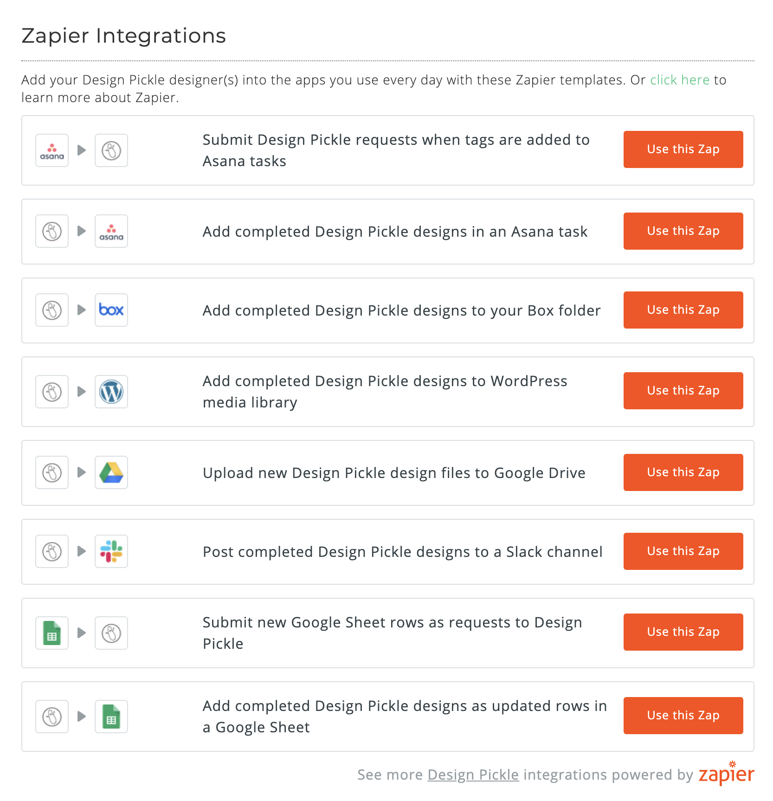

Senior Ruby on Rails Engineer
Grand Rapids, MI
The Zapier initiative was a large, multi-step project. The first requirement was to build an API allowing customers to make requests, edit their requests, and see their completed requests. The API functions were built entirely with Zapier in mind. Although an API can be useful on its own, the purpose of building this API was to integrate seamlessly with Zapier.
Zapier is very particular about how it wants data. It uses a polling functionality that runs every 15 minutes to see if there are any updates to the endpoint, and any updates trigger another action. Also, Zapier was built for synchronous / immediate actions, not for actions that can take multiple days to trigger a response, like a design request.
I used Stoplight to build out the documentation for the API.
Then, I built the Zapier app using their specifications and skeletons, eventually uploading it and publishing it for Design Pickle customers to find and use.
Finally, I created Zapier Templates, which are pre-configured connections between the Design Pickle Zapier app and some other common apps (Google Sheets, Asana, Basecamp, Slack, Box, Google Drive, Wordpress). These allow customers to quickly and easily make a connection with the Design Pickle Zap.
Before I left Design Pickle, hundreds of customers were using the Zapier integration so they could send and receive their design requests from their project management / file storage apps of their choice without ever having to log into Design Pickle's site.
